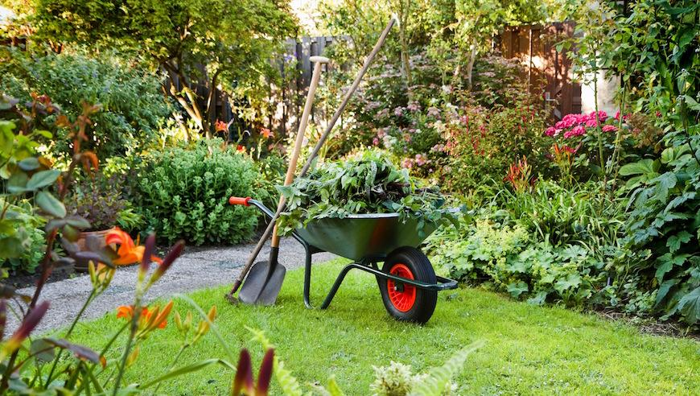
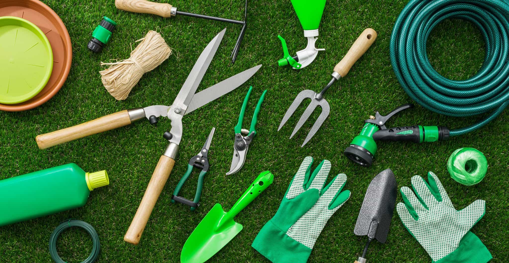

The Benefits of Professional Garden Maintenance

Regular garden maintenance is essential for keeping your outdoor space in pristine condition. Hiring
professional garden maintenance services like Lucky Shrub ensures that your plants receive proper
care, including watering, fertilizing, pruning, and pest control. With expert hands taking care of
your garden, you can enjoy a beautiful, healthy landscape without the stress and effort.
Wildlife-Friendly Garden: Inviting Nature into Your Backyard
Designing a garden that welcomes birds, butterflies, and other wildlife not only adds charm but also
supports local ecosystems. Incorporate native plants, provide food and water sources, and create
sheltered areas to attract a diverse array of creatures. By nurturing a wildlife-friendly garden,
you'll witness nature's beauty up close and contribute to the conservation of local species.
Essential Tools for Every Gardener: Building Your Garden Arsenal

A well-equipped gardener is prepared for any task. From basic hand tools like trowels and pruners to
specialized equipment such as a wheelbarrow or a soaker hose, having the right tools makes gardening
more efficient and enjoyable. Invest in high-quality, durable tools that suit your gardening needs
and keep them properly maintained for years of successful gardening.